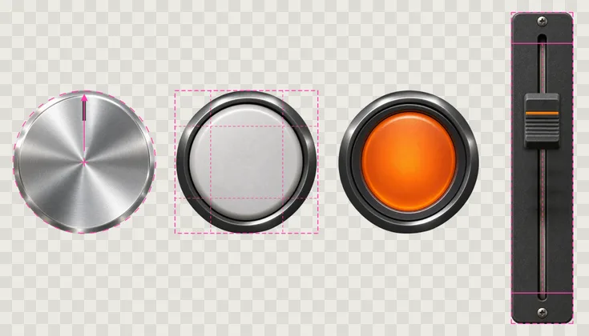

テンプレートTemplates
パフォーマンス画面（PERF）の背景を自分で作るための下絵です。アプリに入っている 4 枚の板を、背景を置く場所の大きさの PNG にしました。GUIDE の付いたものには、部品が並ぶ範囲を示すピンクの破線が引いてあります。
Starting points for your own perform-screen (PERF) backgrounds: the four panels built into the app, as PNGs sized for the background area. The GUIDE versions have a pink dashed line showing where the parts go.
 BLACK PLAIN
BLACK PLAIN
 WHITE PLAIN
WHITE PLAIN
 BLACK PANEL
BLACK PANEL
 WHITE PANEL
WHITE PANEL


背景の使い方Backgrounds: how to use
- 使う端末に合う大きさの PNG をダウンロードして、好きな画像編集アプリで絵や文字を描き足します。
- DBR-1 の PERF で EDIT → ⋯ → Background… → Choose image… → TEMPLATE を選んで、その画像を選びます。部品がガイドの線の内側に並びます（線は消してから読み込んでかまいません）。
Download the PNG for your device, draw on it in any image editor, then in DBR-1 open PERF → EDIT → ⋯ → Background… → Choose image… → TEMPLATE and pick it. The parts sit inside the guide line (you can erase the line before loading).
背景の大きさの目安Background sizes
| 端末 / Device | 背景を置く場所の横:縦 / Area aspect | テンプレート / Template |
|---|---|---|
| タブレット / Tablet | 約 1.9:1（1920×1200 の画面で約 1870×1000） | 1900×1000 |
| 横にしたスマートフォン / Phone (landscape) | 約 2.5〜2.7:1（2400×1080 前後の画面で約 2200×830） | 2200×830 |
- 比が違う画面では、真ん中を残して上下か左右を切って表示します。大事な絵は端から少し離して置いてください。
On screens with a different aspect, the image is cropped from the middle, so keep important artwork a little away from the edges. - 画像はアプリの中に写されます（画面より大きければ画面の大きさまで縮めます）。
The image is copied into the app (scaled down to the screen size if larger). - WALLPAPER で読み込んだ画像では、部品は場所いっぱいに並びます（縮めません）。
With WALLPAPER, parts use the whole area (not shrunk).
部品のテンプレート（MY SKIN）Part templates (MY SKIN)
ノブ・ボタン・フェーダーも自分の画像にできます。PERF の EDIT で部品をタップ → STYLE の最後の + MY SKIN… で画像を選びます（一度作れば、ほかの部品でも一覧から選べます）。ピンクの線はガイドです（消してから読み込んでください）。見本はアプリの部品をこの決まりに合わせたものです。
Knobs, buttons and faders can use your own pictures too. In PERF EDIT, tap a part → + MY SKIN… at the end of the STYLE list and pick a picture (once made, it can be chosen for other parts from the list). The pink lines are guides (erase them before loading). The samples are the app's own parts redrawn to these rules.

| 部品 / Part | 決まり / Rules | テンプレート / Template | 見本 / Sample |
|---|---|---|---|
| KNOB | 正方形・背景は透明。指す印を真上（= 真ん中の値）に。アプリが ±135° 回し、周りの印はアプリが描く Square, transparent background, pointer straight up (= centre value). The app turns it ±135° and draws the marks around it. |
512×512 | KNOB |
| BUTTON | 正方形。外側 1/4（線の外）は角として伸ばさない。ON（光っているとき）はなくても可（OFF を部品の色で光らせる） Square. The outer quarter (outside the lines) stays unstretched as corners. ON (lit) is optional; without it, OFF lights up in the part colour. |
512×512 | OFF · ON |
| FADER PLATE | 縦長。上下 1/10（実線の外）は伸ばさない端。つまみの中心は実線の間を動く Tall. The top and bottom tenth (outside the solid lines) are fixed ends; the cap centre moves between the lines. |
200×1000 | PLATE |
| FADER CAP | 板と同じ横幅。中心（横線）が値の位置。なくても可 Same width as the plate. Its centre (the line) marks the value. Optional. |
200×200 | CAP |